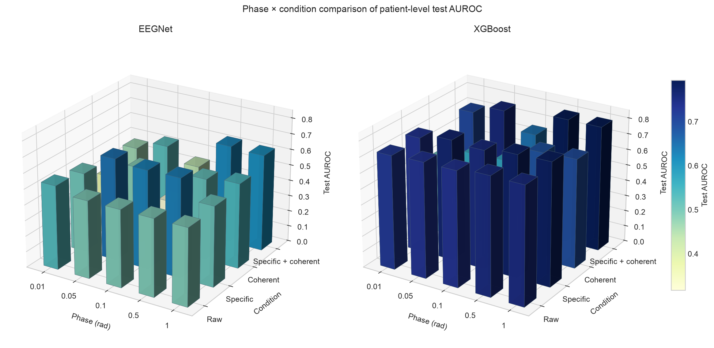
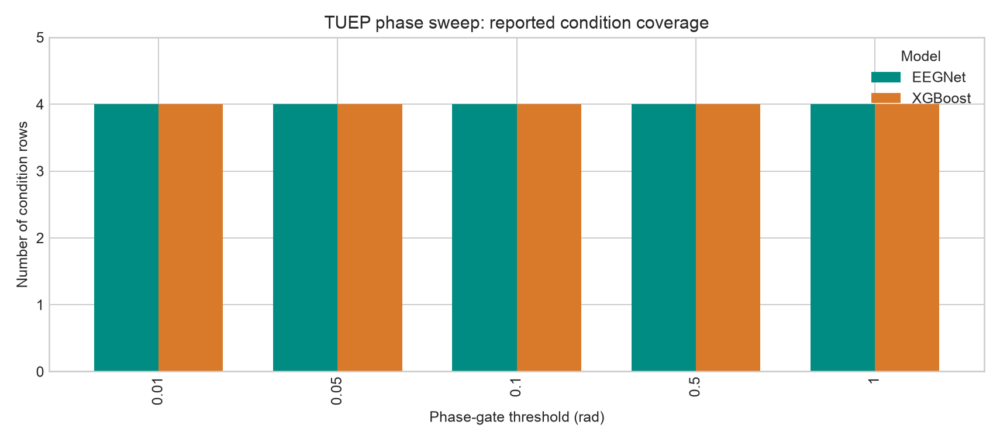
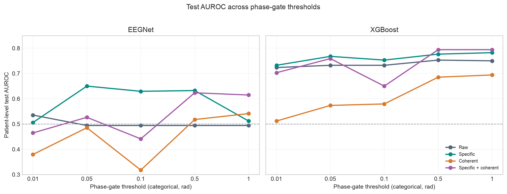
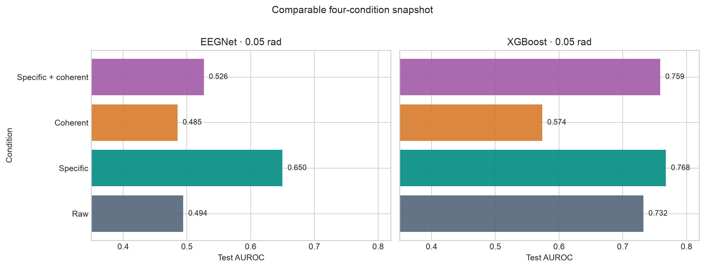
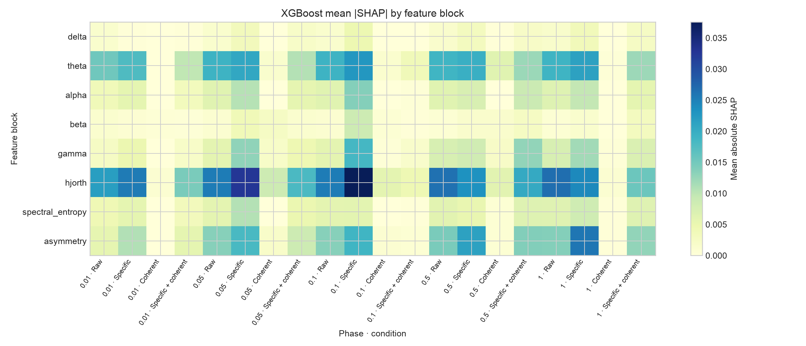

ECMAD · TUEP · PATIENT-LEVEL EVALUATION
分量分类结果的
相位门控描述性分析
对五个 phase-gated 阈值下的 TUEP 患者级 EEGNet 与 XGBoost 产物进行统一汇总，重点观察 specific / coherent 分量及其组合对下游分类效用的影响。
结论速览
高阈值阶段已补齐四个条件，五个阈值现在都支持完整的 Raw / specific / coherent / specific_coherent 比较。当前 XGBoost 的最佳测试 AUROC 为 0.794，出现在 0.5 和 1 rad 的 specific_coherent；但在同一阈值下，specific 在 0.5 rad 达到 AUROC 0.776、在 1 rad 达到 0.782，说明提升并不只来自组合条件。EEGNet 的最高测试 AUROC 为 0.650，出现在 0.05 rad 的 specific。
最佳 XGBoost 条目
1 rad · Specific + coherent
AUROC 0.794 · AUPRC 0.704
F1 0.688 · balanced accuracy 0.690
最佳 EEGNet 条目
0.05 rad · Specific
AUROC 0.650 · AUPRC 0.656
F1 0.533 · balanced accuracy 0.610

数据范围与分析口径
本报告读取五个结果目录中的 config_resolved.yaml、EEGNet condition_metrics.csv、XGBoost comparison_summary.csv、各条件的 test_metrics.json / data_stats.json 与 SHAP 汇总。所有完整结果的患者划分为 train 124、validation 17、test 37，且 patient_disjoint=true；正类是 control。

| phase threshold | EEGNet rows | XGBoost rows | coverage |
|---|---|---|---|
| 0.01 rad | 4 | 4 | 四条件完整 |
| 0.05 rad | 4 | 4 | 四条件完整 |
| 0.1 rad | 4 | 4 | 四条件完整 |
| 0.5 rad | 4 | 4 | 四条件完整 |
| 1 rad | 4 | 4 | 四条件完整 |
模型与评估规则
- EEGNet：患者均衡加权 BCE；按 validation patient AUPRC 选择 checkpoint。
- EEGNet：按 validation patient balanced accuracy 冻结阈值。
- XGBoost：患者级聚合；报告中保留结果文件的测试阈值。
- 所有 test 指标都是冻结规则后的单次最终测试评估。
- specific_coherent：通道轴先 specific、后 coherent。
- base211：211 维特征，SHAP 按 feature block 汇总。
相位阈值扫描
相位门控阈值越大，允许通过的相位差范围越宽。新增结果后，所有 phase × condition 组合均有实测数据，曲线不再需要对缺失条件做解释性留白。

XGBoost 的 specific_coherent 在 0.5 和 1 rad 均为 0.794；但 specific 在 0.5/1 rad 分别为 0.776/0.782，且 coherent 在 1 rad 达到 0.694，表明高阈值下各分量的排序性能整体改善。EEGNet 则没有同样的单调趋势：specific 在 0.05 rad 达到峰值 0.650，specific_coherent 在 0.1 rad 降至 0.441 后回升。
模型与条件对照
0.05 rad：四条件横向比较

在 XGBoost 中，specific 相比 Raw 的测试 AUROC 提高 +0.035，balanced accuracy 提高 +0.091；specific_coherent 也保持较高水平（AUROC 0.759）。coherent 单独使用较弱（AUROC 0.574）。EEGNet 的 0.05 rad 结果不重复这一排序：specific 为 0.650，而 specific_coherent 为 0.526。
高阈值 specific_coherent：组合条件与单分量
EEGNet · 0.5 / 1 rad
| Condition | AUROC | AUPRC | F1 | Balanced acc. | Accuracy |
|---|---|---|---|---|---|
| Raw | 0.494 | 0.542 | 0.444 | 0.460 | 0.459 |
| Specific | 0.632 | 0.632 | 0.261 | 0.513 | 0.541 |
| Coherent | 0.518 | 0.621 | 0.424 | 0.481 | 0.486 |
| Specific + coherent | 0.624 | 0.649 | 0.545 | 0.590 | 0.595 |
| Condition | AUROC | AUPRC | F1 | Balanced acc. | Accuracy |
|---|---|---|---|---|---|
| Raw | 0.494 | 0.542 | 0.444 | 0.460 | 0.459 |
| Specific | 0.512 | 0.571 | 0.533 | 0.453 | 0.432 |
| Coherent | 0.541 | 0.559 | 0.500 | 0.560 | 0.568 |
| Specific + coherent | 0.615 | 0.653 | 0.500 | 0.651 | 0.676 |
XGBoost · 0.5 / 1 rad
| Condition | AUROC | AUPRC | F1 | Balanced acc. | Accuracy |
|---|---|---|---|---|---|
| Raw | 0.753 | 0.697 | 0.631 | 0.671 | 0.649 |
| Specific | 0.776 | 0.764 | 0.730 | 0.737 | 0.730 |
| Coherent | 0.685 | 0.664 | 0.631 | 0.635 | 0.649 |
| Specific + coherent | 0.794 | 0.717 | 0.784 | 0.791 | 0.784 |
| Condition | AUROC | AUPRC | F1 | Balanced acc. | Accuracy |
|---|---|---|---|---|---|
| Raw | 0.750 | 0.705 | 0.598 | 0.606 | 0.622 |
| Specific | 0.782 | 0.742 | 0.728 | 0.741 | 0.730 |
| Coherent | 0.694 | 0.704 | 0.607 | 0.626 | 0.649 |
| Specific + coherent | 0.794 | 0.704 | 0.688 | 0.690 | 0.703 |
特征贡献模式：XGBoost
SHAP 汇总显示，base211 的贡献主要集中在频带功率、Hjorth 与 spectral entropy / asymmetry；connectivity、wavelet、complexity、temporal 在该 profile 中为 0，不应被解读为已参与本次模型。

在 0.05 rad 的 specific 条件中，贡献较高的 block 为 hjorth (0.0325)、theta (0.0207)、asymmetry (0.0181)、gamma (0.0130)。这只是模型解释层面的关联，不等同于这些 block 对生理信号的独立因果作用。
限制、风险与下一步
- 已解决的覆盖问题：五个阈值现在都包含四个条件，报告可以进行完整的 phase × condition 描述比较。
- 样本量：测试集只有 37 位患者；患者级指标可受少数患者影响，尤其是 F1、balanced accuracy 和冻结阈值下的混淆矩阵。
- 模型差异：EEGNet 与 XGBoost 的输入与优化路径不同，不能将它们的绝对数值直接视为同一模型的重复验证。
- 实验目标：分类效用是下游评价，不替代 ERP-CORE 的直接信号保真/去噪指标，也不能据此断言 specific_coherent 在生理意义上“最干净”。
建议的确认路径
- 对 XGBoost 0.5/1 rad 的候选结果做重复随机种子或 bootstrap 患者级置信区间。
- 检查高阈值下分量性能提升是否在独立 split 或外部数据上复现。
- 将高阈值候选与 ERP-CORE 直接去噪指标联合判断，而不是只按 AUROC 选阈值。
完整测试指标
EEGNet：各相位实际存在的条件
0.01 rad
| Condition | AUROC | AUPRC | F1 | Balanced acc. | Accuracy |
|---|---|---|---|---|---|
| Raw | 0.535 | 0.534 | 0.370 | 0.522 | 0.541 |
| Specific | 0.506 | 0.560 | 0.400 | 0.501 | 0.514 |
| Coherent | 0.379 | 0.499 | 0.273 | 0.538 | 0.568 |
| Specific + coherent | 0.465 | 0.576 | 0.300 | 0.588 | 0.622 |
0.05 rad
| Condition | AUROC | AUPRC | F1 | Balanced acc. | Accuracy |
|---|---|---|---|---|---|
| Raw | 0.494 | 0.542 | 0.444 | 0.460 | 0.459 |
| Specific | 0.650 | 0.656 | 0.533 | 0.610 | 0.622 |
| Coherent | 0.485 | 0.459 | 0.000 | 0.425 | 0.459 |
| Specific + coherent | 0.526 | 0.524 | 0.100 | 0.479 | 0.514 |
0.1 rad
| Condition | AUROC | AUPRC | F1 | Balanced acc. | Accuracy |
|---|---|---|---|---|---|
| Raw | 0.494 | 0.542 | 0.444 | 0.460 | 0.459 |
| Specific | 0.629 | 0.586 | 0.400 | 0.572 | 0.595 |
| Coherent | 0.318 | 0.419 | 0.276 | 0.418 | 0.432 |
| Specific + coherent | 0.441 | 0.451 | 0.250 | 0.488 | 0.514 |
0.5 rad
| Condition | AUROC | AUPRC | F1 | Balanced acc. | Accuracy |
|---|---|---|---|---|---|
| Raw | 0.494 | 0.542 | 0.444 | 0.460 | 0.459 |
| Specific | 0.632 | 0.632 | 0.261 | 0.513 | 0.541 |
| Coherent | 0.518 | 0.621 | 0.424 | 0.481 | 0.486 |
| Specific + coherent | 0.624 | 0.649 | 0.545 | 0.590 | 0.595 |
1 rad
| Condition | AUROC | AUPRC | F1 | Balanced acc. | Accuracy |
|---|---|---|---|---|---|
| Raw | 0.494 | 0.542 | 0.444 | 0.460 | 0.459 |
| Specific | 0.512 | 0.571 | 0.533 | 0.453 | 0.432 |
| Coherent | 0.541 | 0.559 | 0.500 | 0.560 | 0.568 |
| Specific + coherent | 0.615 | 0.653 | 0.500 | 0.651 | 0.676 |
XGBoost：各相位实际存在的条件
0.01 rad
| Condition | AUROC | AUPRC | F1 | Balanced acc. | Accuracy |
|---|---|---|---|---|---|
| Raw | 0.724 | 0.693 | 0.563 | 0.576 | 0.595 |
| Specific | 0.732 | 0.680 | 0.598 | 0.646 | 0.622 |
| Coherent | 0.512 | 0.571 | 0.510 | 0.510 | 0.514 |
| Specific + coherent | 0.703 | 0.648 | 0.608 | 0.610 | 0.622 |
0.05 rad
| Condition | AUROC | AUPRC | F1 | Balanced acc. | Accuracy |
|---|---|---|---|---|---|
| Raw | 0.732 | 0.676 | 0.598 | 0.646 | 0.622 |
| Specific | 0.768 | 0.662 | 0.730 | 0.737 | 0.730 |
| Coherent | 0.574 | 0.574 | 0.452 | 0.534 | 0.568 |
| Specific + coherent | 0.759 | 0.678 | 0.703 | 0.707 | 0.703 |
0.1 rad
| Condition | AUROC | AUPRC | F1 | Balanced acc. | Accuracy |
|---|---|---|---|---|---|
| Raw | 0.732 | 0.676 | 0.598 | 0.646 | 0.622 |
| Specific | 0.753 | 0.652 | 0.754 | 0.771 | 0.757 |
| Coherent | 0.579 | 0.564 | 0.351 | 0.500 | 0.541 |
| Specific + coherent | 0.650 | 0.614 | 0.598 | 0.646 | 0.622 |
0.5 rad
| Condition | AUROC | AUPRC | F1 | Balanced acc. | Accuracy |
|---|---|---|---|---|---|
| Raw | 0.753 | 0.697 | 0.631 | 0.671 | 0.649 |
| Specific | 0.776 | 0.764 | 0.730 | 0.737 | 0.730 |
| Coherent | 0.685 | 0.664 | 0.631 | 0.635 | 0.649 |
| Specific + coherent | 0.794 | 0.717 | 0.784 | 0.791 | 0.784 |
1 rad
| Condition | AUROC | AUPRC | F1 | Balanced acc. | Accuracy |
|---|---|---|---|---|---|
| Raw | 0.750 | 0.705 | 0.598 | 0.606 | 0.622 |
| Specific | 0.782 | 0.742 | 0.728 | 0.741 | 0.730 |
| Coherent | 0.694 | 0.704 | 0.607 | 0.626 | 0.649 |
| Specific + coherent | 0.794 | 0.704 | 0.688 | 0.690 | 0.703 |
来源与复核
报告由 scripts/generate_tuep_phase_descriptive_report.py 读取结果目录生成。原始产物包括各 phase 的 config_resolved.yaml、run_summary.json、split_manifest.csv、模型指标 CSV/JSON 与 SHAP JSON。报告没有重新训练模型，也没有对缺失条件做插值或填充。